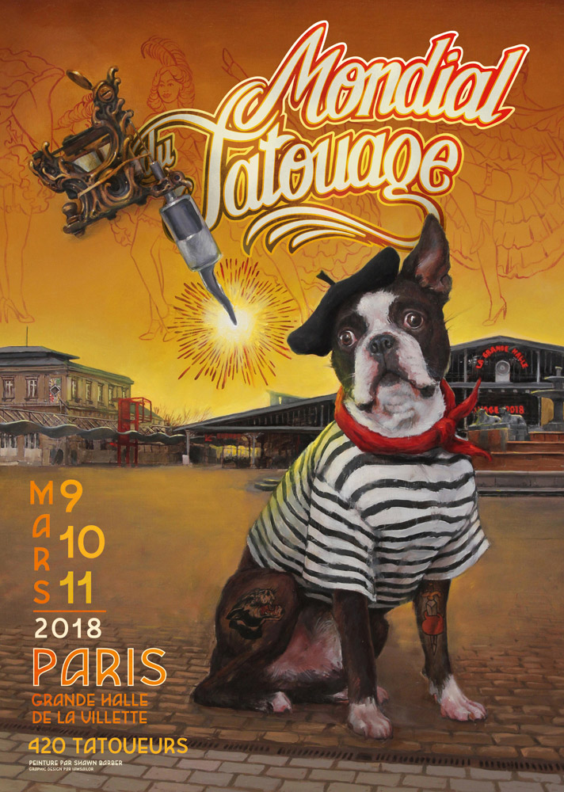

Convention du Tatouage à Paris !

Plus de 400 tatoueurs venus du monde entier, ça laisse rêveur ! Tous apportent leur graphisme et la culture de leur pays dans une diversité infinie de styles anciens, nouveaux ou hybrides. En France, ils revendiquent le statut d’artiste depuis de nombreuses années : Paris se doit donc de représenter au mieux le 10ème art...
En savoir plus..
Le tatouage du futur : une encre qui disparait, réapparait et change de couleur
Si vous êtes fan de science fiction, vous avez sans doute une certaine idée du futur. Les voitures voleront toutes seules, on pourra transférer notre conscience dans un autre corps, ou encore faire effacer un tatouage compromettant en quelques secondes. Le futur, c'est maintenant.
Impossible n'est pas Gaulois (ou Français). Les tatouages sont à la mode, c’est indéniable. En France plus de 14 % des personnes majeures sont tatouées. Mais qui dit tendance dit effet de mode, et dit donc parfois, effet de lassitude.
En savoir plus..